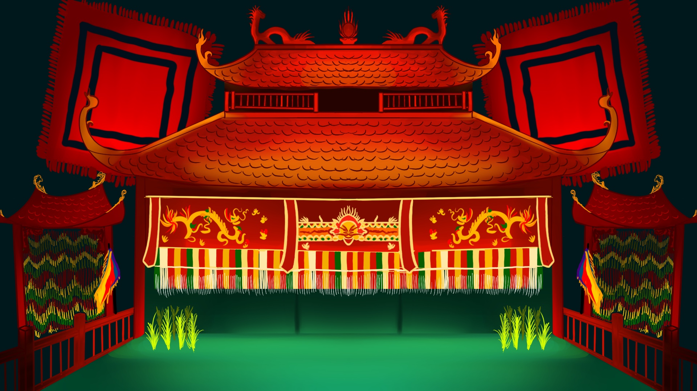
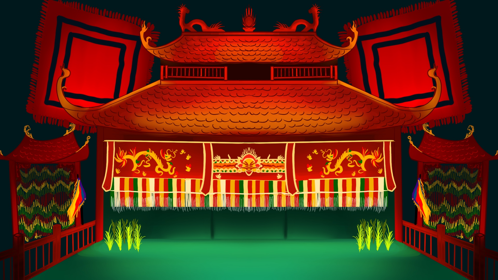

Vietnamese water puppetry, or múa rối nước, originated over a thousand years ago in the Red River Delta. Created by rice farmers, this unique art form uses flooded fields as stages, with puppeteers controlling lacquered wooden puppets from behind a screen. Shows depict Vietnamese folklore, myths, and daily village life, accompanied by traditional music and special effects. Initially performed in rural festivals, water puppetry has been preserved and revived in modern theaters like Hanoi’s Thăng Long Water Puppet Theatre, becoming an iconic part of Vietnamese culture.
★★★★★
Watching múa rối nước is such a unique and delightful experience. The stage is literally a pool of water, and the puppets seem to glide and dance across it effortlessly. It’s incredible how alive they feel—whether they’re reenacting old legends, farming scenes, or playful moments with animals, there’s always this whimsical energy that pulls you in.
The live music is a huge part of it, too. Instruments like the đàn bầu and drums set the tone, and the narration sometimes adds a cheeky humor that gets everyone laughing. You can’t help but admire the puppeteers—they stay completely hidden but somehow make the puppets move so naturally.
What really struck me was how it all felt so rooted in tradition. It’s not just a performance; it’s a little window into Vietnam’s history and culture. The whole experience left me feeling connected and inspired, like I’d just witnessed something truly special.
 
